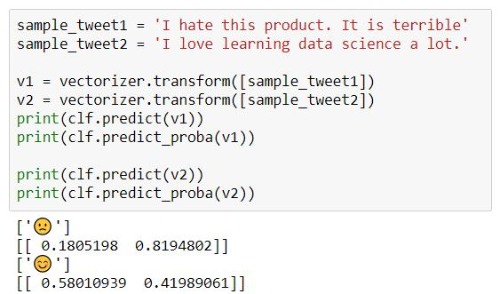
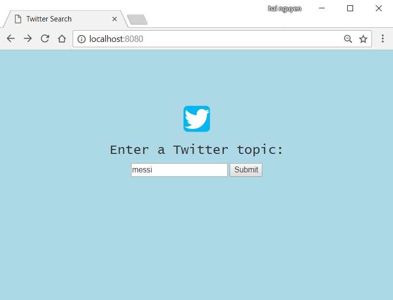
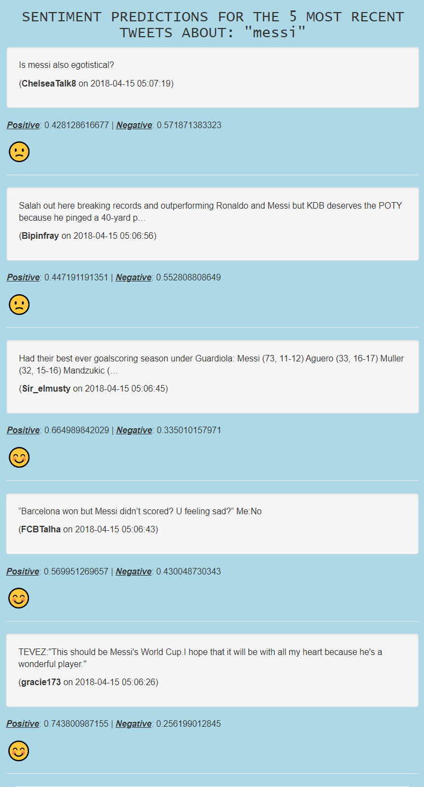

Twitter so far has been one of the most used social media in the world. From celebrities to politicians, to normal citizens like you and I are using it to convey what we think to others. The most important advantage that Twitter has over other tools is that users are only allowed to post short conversations (or tweets). That is why there are so much values in these posts that we can draw from. Data miners often look at public tweets and analyze their sentiments to have a good insight of the public opinions toward a person, a company, a product an event, and many more. This has proven to be an effective way to help steer businesses to directions that satisfy the most customers.
In this project, I will build a web application that leverages Natural Language Processing to classify whether a tweet has a positive or negative sentiment. The app can also allows users to search for any topic of interest.
Since tweets are short sentences, the training dataset I used include 5,300 positive and 5,300 negative short reviews.
Reviews in the training sets were vectorized using Tf-idf algorithm. Stop words (words that are not informative such as "the", "a", "I", etc.) were removed before training. Finally, a Multinomial Naive Bayes was fit into the labeled data. For each new sentence, the model calculates the probabilities of the sentence being "positive" or "negative". The default cutoff probability to be 0.5 as followed.

For the first tweet: "I hate this product. It is terrible", our model identifies the probability of it being positive is 18.05% and the probability of it being negative is 81.94%. Therefore, it is labeled as "negative". Similarly, the next tweet: "I love learning data science a lot." is labeled as "positive" since it is 58.01% being positive and 41.99% beging negative. The predictions are far from perfect, but for our purpose, they can be very useful. The model was then saved for implementation in our application later on.
First, I obtained the free API that Twitter provides. This allows users to stream thousands of tweets per day in real time. These streamed tweets are then passed into our model to make appropriate predictions. To avoid duplicate retweets (users posting popular tweets on their page), I turned this off so we only use original tweets.
When run on our local host, the interface of the app is very simple. The user can enter any topic they want and submit.

Figure: Homepage.Once the topic is submitted, the application will display the five most recent tweets on that topic (this number can be changed). Each tweet (along with its owner and timestamp) is analyzed and the sentiments are predicted whether it is "positive" or "negative". The probabilities are also shown to clarify the confidence of our predictions.

Figure: Result page
A sample topic of "messi" (the soccer superstar) was entered. We can see that the accuracy of the predictions is decent. For example, our model can identify positive patterns such as "best ever goal scoring season" or "wonderful player" and predicted positive sentiments with high probabilities. "Egotistical" was also recognized and pull the prediction toward the negative direction. However, when tweets contain both positive and negative words like in the tweet with both "won" and "sad", our model is confused and gave similar probabilities. Similarly with informative tweets and without clear sentiment values.
We can absolutely improve our model if a more relevant dataset is available, preferably a dataset with real tweets. With better training, the application can be very versatile. In the meantime, it is doing a decent job of classifying tweets with clear sentiments.